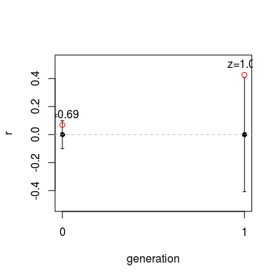
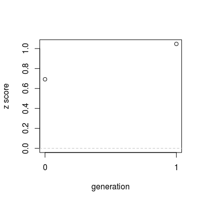

Run Mantel tests on a set of consecutive data.
Usage
mantel.development(meanings, strings, test.args = NULL, ..., plot = NULL)
Arguments
- meanings
- a matrix specifying all meaning combinations, as described in hammingdists
- strings
- either a vector of strings, or a matrix of strings per generation
- test.args
- a list of named arguments passed on to mantel.test
- ...
- extra arguments passed on to the plotting function - here you
might want to specify parameters like
ylim.. - plot
- specifies which mantel test outcome should be plotted (if any):
currently supported are
"r"and"z".
Run Mantel tests on a set of consecutive data.
Value
a matrix of test results
Description
Performs multiple Mantel tests and returns their results in a matrix, optionally visualising part of the data in a plot. This function can be called with experimental data, distance matrix calculation is taken care of internally.
Examples
mantel.development(allmeaningcombinations(c(2,2)), c("asd", "asdf", "", "f"), plot="r")Permutation space is small, enumerating all 24 possible permutations.
mean sd veridical p z msample 0 0 0.4074407 0.4264014 0.008 1.046536 0.426401....m <- matrix(c("sadasd", "iuerwh", "sdfgkj", "uofidsgf", "asd", "asdf", "", "f"), nrow=2, byrow=T) mantel.development(allmeaningcombinations(c(2,2)), m, plot="r")Permutation space is small, enumerating all 24 possible permutations. Permutation space is small, enumerating all 24 possible permutations.
mean sd veridical p z msample 0 0 0.1001671 0.06933752 0.016 0.6922187 0.069337.... 1 0 0.4074407 0.42640143 0.008 1.0465362 0.426401....mantel.development(allmeaningcombinations(c(2,2)), m, plot="z")Permutation space is small, enumerating all 24 possible permutations. Permutation space is small, enumerating all 24 possible permutations.
mean sd veridical p z msample 0 0 0.1001671 0.06933752 0.016 0.6922187 0.069337.... 1 0 0.4074407 0.42640143 0.008 1.0465362 0.426401....